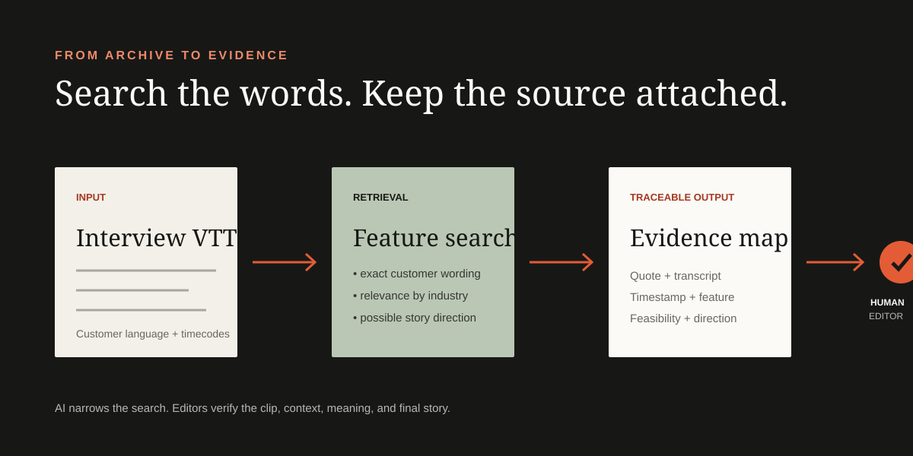

Do not improve the customer’s sentence.
The workflow was instructed to preserve exact wording rather than manufacture cleaner advocacy language.
I built a workflow that searched interview transcripts for product-relevant testimony, preserved the customer’s exact wording, and returned a traceable evidence map for editors to verify and shape.
Editors needed customer interviews that could support three product features across a bundle campaign. The source archive covered roughly five companies in each of twelve industries, often in interviews lasting 45–60 minutes.
The real question was not only “Where is the quote?” It was “Do we have enough credible material to support this industry and story direction before an editor commits to the cut?”
The workflow looked for feature relevance and story feasibility—not only exact keyword matches.
Instructions required verbatim language so a useful result did not become a rewritten testimonial.
Every proposed quote retained a timestamp so the editor could verify the clip, context, and delivery.

The workflow was instructed to preserve exact wording rather than manufacture cleaner advocacy language.
Editors received timestamps and transcript context so each suggestion could be verified against the interview.
The report grouped testimony by feature and industry, making coverage gaps visible early.
The tool surfaced candidates. People decided whether the clip was accurate, fair, useful, and emotionally right.
VTT files supplied the customer language and the timecodes needed for source verification.
Relevant quotes, feature references, industry fit, timestamps, and possible video directions were organized for review.
Daydream helped editors move from the brief toward source clips; editors remained responsible for the final cut.
The workflow compressed the initial search for useful testimony and let editors evaluate the available material sooner.